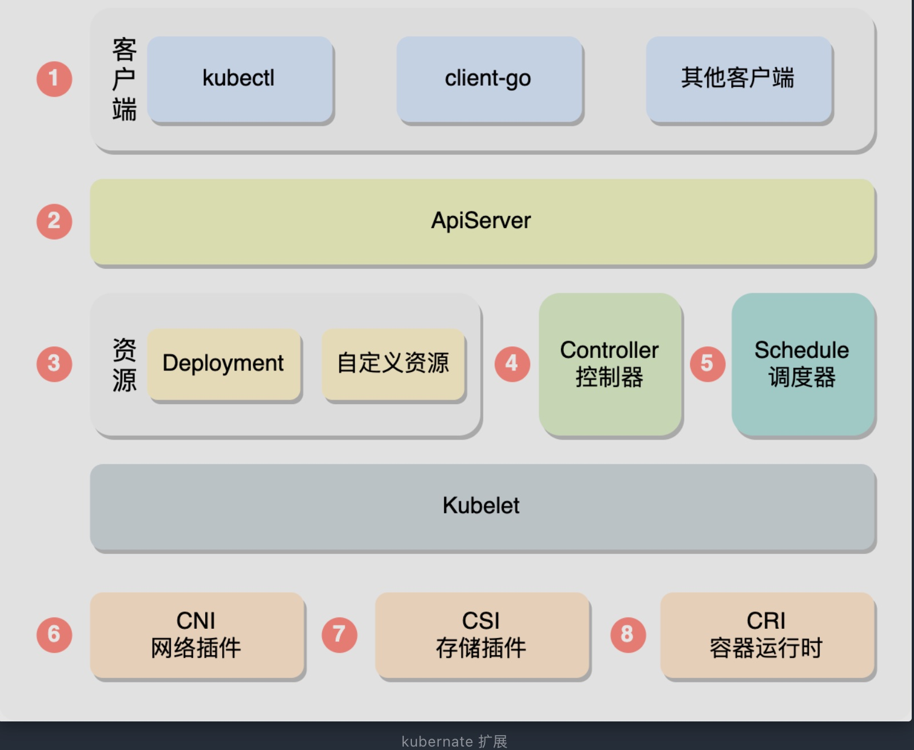
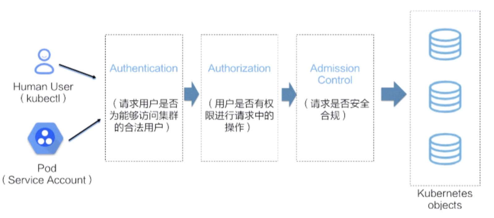
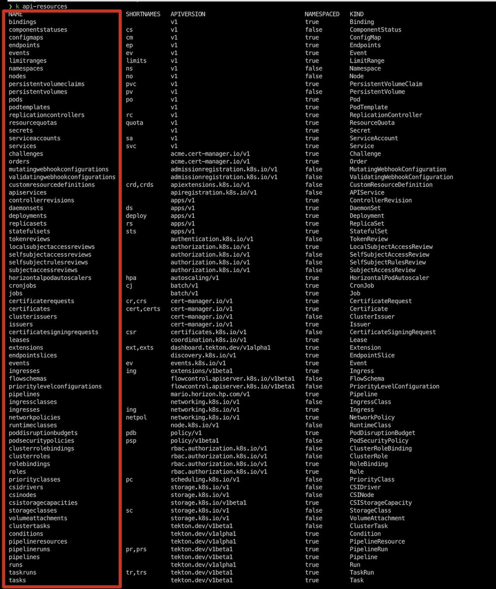
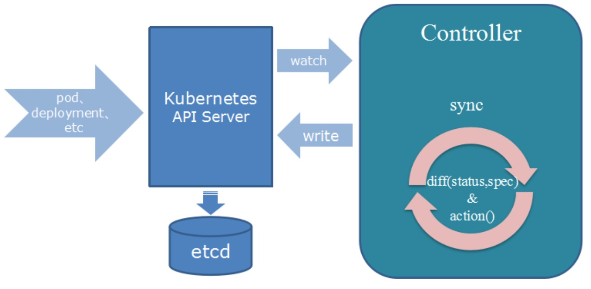
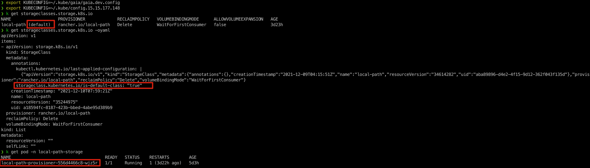

Kubernetes扩展
目前Kubernetes已经成为容器编排的事实标准，其本身的功能也是非常丰富并且灵活，但是也不能满足所有人的需求。在遇到Kubernetes提供的能力无法满足我们需求的时候，我们可以利用Kubernetes高度可配置且可扩展的能力进行定制。
Kubernetes的定制化方法主要分为配置和扩展两种，这里主要讲述Kubernetes扩展，实际上从客户端到底层容器运行时，绝大部分地方Kubernetes都为我们预留了扩展点

Kubectl
用户通常使用kubectl与Kubernetes API交互。Kubectl插件 能够扩展Kubectl的行为，不过这些插件只会影响到每个用户的本地环境
Kubectl将会在用户的PATH路径下查找 kubectl-* 为前缀的二进制文件，并且把它当成一个插件.
例如tekton的cli命令行工具，可以作为一个kubectl插件kubectl-tkn 方式运行

有一些写好的kubectl plugins可供我们使用，更多信息请访问这里
ApiServer
APIServer处理所有的请求，当请求到达APIServer时，需要经过认证->鉴权->准入控制的步骤，在这些步骤中都存在扩展点

准入控制
用的最多的是准入控制的扩展，准入控制会先经过变更准入控制MutatingAdmissionWebhook，然后再经过验证准入控制ValidatingAdmissionWebhook,任何一个准入控制器返回了错误这个请求都会失败，在这两个准入控制器中可以做很多事情，例如注入sidecar，验证资源，调整pod的配额等等
Aggregation Layer
从K8s 1.7版本之后，APIServer引入了聚合层的功能，API Aggregation允许在不修改Kubernetes核心代码的同时扩展Kubernetes API，即将第三方服务注册到Kubernetes API中，这样就可以通过Kubernetes API来访问外部服务
例如：将如下的资源提交给K8s以后，当用户在访问ApiServer的/apis/metrics.kubernetes.io/v1beta1路径时，会被转发到集群中的metrics-server.kube-system.svc服务上
apiVersion: apiregistration.Kubernetes.io/v1
kind: APIService
metadata:
name: v1beta1.metrics.Kubernetes.io
spec:
service:
name: metrics-server
namespace: kube-system
group: metrics.Kubernetes.io
version: v1beta1
insecureSkipTLSVerify: true
groupPriorityMinimum: 100
versionPriority: 100
资源
我们常用的 Deployment, Pod, Node 等都是K8s官方提供的内置资源，但是有时候内置资源无法满足我们的需求时，就可以使用CustomResource，即自定义资源
CR常常会和controller一起配合使用

控制器
Kubernetes中资源的状态的维护都是Controller来实现的，controller会不断尝试将一个资源调整为我们描述的状态，即常说的声明式api
声明式API背后具体的活都是controller干的，controller一般会配合着CRD一起使用

调度器
Kubernetes调度器负责决定Pod要放置到哪些节点上执行
调度器是一种特殊的控制器，负责监视Pod变化并将Pod分派给节点。默认的调度器可以被整体替换掉或者是使用多个调度器
除此之外，官方默认的调度器也支持WebHook
网络插件CNI
CNI网络插件，全称Container Network Interface(容器网络接口)，由一组用于配置Linux容器的网络接口的规范和库组成，同时还包含一些插件
CNI仅关心容器创建时的网络分配，和当容器被删除时释放网络资源
存储插件CSI
全称是Container Storage Interface，可以通过CSI接口支持不同的存储类型
推荐一个动态自动创建本地目录作为持久化目录的provisioner rancher/local-path-provisioner

- 搞定持久化存储
- PV/PVC/StorageClass/Provisioner
- rancher provisioner
- 容器存储接口
- CSI插件编写指南
- csi-spec
- 使用CSI和Kubernetes实现卷的动态扩容
容器运行时CRI
全称Container Runtime Interface,是一组用于管理容器运行时和镜像的gRPC接口，利用这个接口可以支持docker，containerd等不同的容器运行时